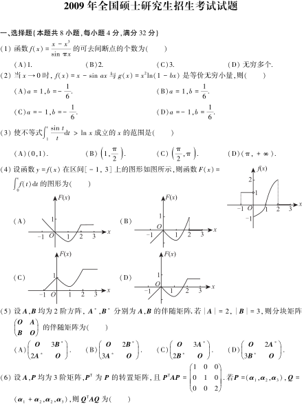

← 考研数学三全部年份
1987–2009 考研数学三
23 年真题及参考答案 · 保留早年 IV、V 卷 ·
封面
按年份跳转
2009
2008
2007
2006
2005
2004
2003
2002
2001
2000
1999
1998
1997
1996
1995
1994
1993
1992
1991
1990
1989
1988
1987
2009年

2009 年考研数学三 · 真题
3 页
2009 年考研数学三 · 参考答案
1 页
2008年
2008 年考研数学三 · 真题
3 页
2008 年考研数学三 · 参考答案
1 页
2007年
2007 年考研数学三 · 真题
3 页
2007 年考研数学三 · 参考答案
1 页
2006年
2006 年考研数学三 · 真题
3 页
2006 年考研数学三 · 参考答案
1 页
2005年
2005 年考研数学三 · 真题
3 页
2005 年考研数学三 · 参考答案
1 页
2004年
2004 年考研数学三 · 真题
3 页
2004 年考研数学三 · 参考答案
2 页
2003年
2003 年考研数学三 · 真题
3 页
2003 年考研数学三 · 参考答案
1 页
2002年
2002 年考研数学三 · 真题
3 页
2002 年考研数学三 · 参考答案
1 页
2001年
2001 年考研数学三 · 真题
3 页
2001 年考研数学三 · 参考答案
1 页
2000年
2000 年考研数学三 · 真题
3 页
2000 年考研数学三 · 参考答案
1 页
1999年
1999 年考研数学三 · 真题
3 页
1999 年考研数学三 · 参考答案
1 页
1998年
1998 年考研数学三 · 真题
3 页
1998 年考研数学三 · 参考答案
1 页
1997年
1997 年考研数学三 · 真题
3 页
1997 年考研数学三 · 参考答案
1 页
1996年
1996 年考研数学三 · 真题
5 页
1996 年考研数学三 · 参考答案
2 页
1995年
1995 年考研数学三 · 真题
4 页
1995 年考研数学三 · 参考答案
2 页
1994年
1994 年考研数学三 · 真题
4 页
1994 年考研数学三 · 参考答案
2 页
1993年
1993 年考研数学三 · 真题
4 页
1993 年考研数学三 · 参考答案
2 页
1992年
1992 年考研数学三 · 真题
5 页
1992 年考研数学三 · 参考答案
2 页
1991年
1991 年考研数学三 · 真题
5 页
1991 年考研数学三 · 参考答案
2 页
1990年
1990 年考研数学三 · 真题
4 页
1990 年考研数学三 · 参考答案
2 页
1989年
1989 年考研数学三 · 真题
4 页
1989 年考研数学三 · 参考答案
2 页
1988年
1988 年考研数学三 · 真题
3 页
1988 年考研数学三 · 参考答案
2 页
1987年
1987 年考研数学三 · 真题
19 页
1987 年考研数学三 · 参考答案
2 页